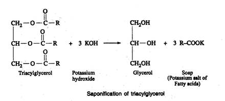

BIC 101 :: Lecture 07-09 :: PLANT FATTY ACIDS

- Fatty acids are carboxylic acids with hydrocarbon chains of 2 to 36 carbons.
- More than 200 fatty acids have been isolated from higher and lower plants.
- Of these, only a few are present in large quantities in most plant lipids. These are referred as major fatty acids.
- Fatty acids present in smaller proportions are called as minor fatty acids.
- Major and minor fatty acids are usually biosynthesised by analogous pathways.
- Fatty acids that occur only in a few plant species are called as unusual fatty acids.
Major fatty acids
- The major fatty acids are saturated or unsaturated with an unbranched carbon chain.
- The saturated fatty acids are lauric (dodecanoic), myristic (tetradecanoic), palmitic (hexadecanoic) and stearic (octadecanoic) acid
- The unsaturated fatty acids are oleic (9-octadecenoic), linoleic (9,12-octadecadienoic) and -linolenic (9,12,15- octadecatrienoic) acid.
- They are usually found in the lipids from all parts of plants
- The structure of fatty acids are written as a symbol of two numbers separated by a colon: the first number denotes the carbon atoms in the chain and the second number denotes the number of unsaturation centres.
- The positions of double bonds are specified by superscript numbers following (delta).
- Thus 18:2 (9, 12) indicates an eighteen carbon fatty acid with two double bonds between C-9 and C-10, and between C-12 and C-13.
- The double bonds of all naturally occurring unsaturated fatty acids are in the cis configuration.
- The non-polar hydrocarbon chain accounts for the poor solubility of fatty acids in water.
Minor fatty acids
The fatty acid composition of cow's and goat's milk are characterised by a high content of short and medium chain saturated fatty acids.
Some minor fatty acids
| Common name | Carbon skeleton |
Systematic name |
Butyric |
4:0 |
Butanoic |
Caproic |
6:0 |
Hexanoic |
Caprylic |
8:0 |
Octanoic |
Capric |
10:0 |
Decanoic |
Unusual fatty acids
- The unusual fatty acids are found only in few individual species or genus or a whole family.
- Castor bean (Ricinus communis) seed oil is rich in ricinoleic acid (90%) which is 12-hydroxy oleic acid CH3(CH2)5-CH(OH)-CH2-CH=CH-(CH2)7-COOH.
- Rape seed (Brassica napus) is rich in erucic acid (cis-13-docosenoic acid CH3(CH2)7-CH=CH-(CH2)11-COOH).
- Hydnocarpic and chaulmoogric acids are found in chaulmoogra oil which is used in the treatment of leprosy.
Essential fatty acids
- Human body is unable to synthesise all fatty acids found in the body.
- Those fatty acids that are not synthesised in the body but required for normal body growth and maintenance are called as essential fatty acids.
- These fatty acids are to be supplied through diet.
- Linoleic and linolenic acids are essential fatty acids
- The longer chain fatty acids can be synthesised by the body from dietary linoleic and -linolenic acids.
- Arachidonic acid is essential but it can be synthesised by the body from linolenic acid. It is also present in the meat
- Linoleic acid is grouped under n-6 family because the 6th carbon from methyl end possesses the double bond.
- Other fatty acids that are synthesised in the body from linoleic acid such as linolenic and arachidonic acids also belong to n-6 family.
- -Linolenic acid belongs to n-3 family and is an essential fatty acid.
- The third carbon from the methyl end possess the double bond
- The organs and tissues that perform the more routine and generalized functions such as adipose tissue, liver, muscle, kidney and the reproductive organs tend to have membranes in which n-6 family of polyunsaturated fatty acids predominate.
- Nervous tissue and retina of the eye have a larger proportion of the longer chain acids with 5 or 6 double bonds predominantly of the n-3 family.
- Fish oils and spirulina are rich in fatty acids of n-3 family.
- Arachidonic acid serves as precursor for the synthesis of prostaglandins,thrombaxanes and prostacyclins.
- These fatty acid derivatives are called as 'eicosanoid' meaning 20 C compounds.
- The main source of these eicosanoids are the membrane phospholipids from which they are released by the action of phospholipase-A.
- Phosphatidyl inositol which contains a high concentration of arachidonic acid in carbon-2 of glycerol provides a major store of eicosanoid precursors.
- Phosphatidyl inositol is an important constituent of cell membrane phospholipids; upon stimulation by a suitable animal hormone it is cleaved into diacylglycerol and inositol phosphate, both of which act as internal signals or second messengers
Simple lipids
- Lipids containing only fatty acids and glycerol or long chain alcohols (monohydric) are called as simple lipids which include fats, oils and waxes.
Fats and oils
- Triacylglycerols are the simplest lipids constructed from fatty acids and glycerol.
- They are also referred as triglycerides, fats or neutral fats.
- Triacylglycerols are composed of three fatty acids esterified to the three hydroxyl groups of glycerol
- When all the 3 fatty acid molecules are of the same kind the triacylglycerol is said to be simple triacylglycerol.
- Mixed triacylglycerol possesses two or more different fatty acids.
- Triacylglycerol that are solid at room temperature are called as fats
- Liquid triacylglycerols are called as oils.
- Neutral fats or oils are mostly composed of mixed triacyl glycerol.
- Fats are usually rich in saturated fatty acids and the unsaturated fatty acids predominate in oils.
- Most oil-producing plants store their lipids in the form of triacylglycerols.
Storage fats or oils
- Triacylglycerols are widely distributed in the plant kingdom. They are found both in vegetative as well as reproductive tissues.
- Triacylglycerols are normally stored in the endosperm of the seed although some plants store appreciable quantities of fat in the fleshy fruit mesocarp, for example, avocado.
- Some plants like the oil palm, store oils in both the mesocarp (Palm oil) and the endosperm (Palm kernel oil).
- The oil present as droplets in the cytoplasm of the seed cells.
- These droplets are called as oil bodies and are surrounded by a membrane composed of phospholipids and protein.
- Most of the common edible oils (groundnut, sunflower, gingelly, soybean, safflower, rice bran) contain limited number of the common fatty acids such as palmitic, stearic, oleic, linoleic and linolenic acids.
- Palm kernel and coconut oils contain higher amount of medium chain saturated fatty acids.
- Seed oils contain small amount of phospholipids, carotenoids, tocopherols, tocotrienols and plant sterols depending on the species of plant and degree of processing.
Structural or hidden fats in plants
- The leaves of higher plants contain upto 7% of their dry weight as fats;
- Some of them are present as surface lipids, the others as components of leaf cells, especially in the chloroplast membrane.
- The fatty acid composition of plant membrane lipids is very simple.
- Six fatty acids- palmitic, palmitoleic, stearic, oleic,linoleic and -linolenic generally account for over 90% of the total fatty acids.
Waxes
- Waxes are esters of long-chain saturated and unsaturated fatty acids with long chain alcohol.
- The carbon number of fatty acids vary from 14 to 34 and that alcohol from 16 to 30.
For example, beeswax is an ester of palmitic acid with a 30 carbon alcohol, triacontanol
- Waxes are the chief storage form of metabolic fuel in marine phytoplanktons.
- Biological waxes find a variety of applications in the pharmaceutical, cosmetic and other industries.
- Lanolin from lamb's wool, beeswax, carnauba wax, spermaceti oil from whales are widely used in the manufacture of lotions, ointments and polishes.
- Waxes are not easily hydrolysed like fats or digested by lipases.
Liquid wax - Jojoba oil
- About 50% of the seed dry weight of jojoba consists of a liquid wax which is unique in the plant kingdom and is similar to sperm whale oil.
- The wax is made up of straight chain esters with an average total chain length of 42 carbons
- Jojoba wax has a wide range of industrial uses including cosmetics, pharmaceuticals, extenders for plastics, printers ink, gear oil additives and various lubricants.
- The oil is highly stable and can be stored for years without becoming rancid.
Cuticular wax
- The outermost surface of the cell walls of epidermal cells are covered with a hydrophobic cuticle which contains wax called cuticular wax.
- The main components of cuticular waxes are hydrocarbon (odd chain alkanes) and its derivatives, wax esters, free aldehydes, free acids, free alcohols and other components like mono esters of phenolic acids and aliphatic alcohols.
- The main function of the cuticular wax is to reduce the excessive losses and gains of water by the underlying tissue.
- It also helps in protecting the tissues from chemical, physical and biological attack.
Compound lipids
Compound lipids contain certain chemical groups in addition to alcohol and fatty acids.
- These group of lipids include glycerophospholipids, sphingo phospholipids, glycolipids, sulpholipids and lipoproteins.
Glycerophospholipids
- The important structural lipid in biological membrane is glycero phospholipid which contains glycerol, fatty acids phosphoric acid and a nitrogenous base.
- The general structure of a glycerophospholipid is given below
- Without alcoholic residue (X), it is called as phosphatidic acid
- Depending on the alcoholic residue attached to phosphatidic acid, they are named as
i. Phosphatidyl choline (lecithin)
ii. Phosphatidyl ethanolamine (cephalin)
iii. Phosphatidyl serine
iv. Phosphatidyl inositol
v. Phosphatidyl glycerol (which include monophosphatidyl glycerol and diphosphatidyl glycerol or cardiolipin).
Phosphatidyl choline (lecithin)
- Lecithin contains glycerol, fatty acids, phosphoric acid and a nitrogenous base, choline
- Lecithins are widely distributed in the membranes of cells having both metabolic and structural functions.
- Dipalmityl lecithin is a very effective surface active agent preventing adherence due to surface tension of the inner surfaces of the lungs.
- Most phospholipids have a saturated fatty acid in the C1 position but an unsaturated fatty acid in the C2 position.
Phosphatidyl ethanolamine (cephalin)
- The cephalin differs from lecithin only in the nitrogenous group where ethanolamine is present instead of choline
Phosphatidyl serine
- The hydroxyl group of the amino acid L-serine is esterified to the phosphatidic acid
Phosphatidyl inositol
- Phosphatidyl inositol is an important constituent of cell membrane phospholipids;
- upon stimulation by a suitable animal hormone it is cleaved into diacylglycerol and inositol phosphate, both of which act as internal signals or second messengers.
Phosphatidyl glycerol and diphosphatidyl glycerol (Cardiolipin)
- Cardiolipin is a phospholipid that is found in membranes of mitochondria.
- It is formed from phosphatidylglycerol
Sphingophospholipids
- The phosphate and fatty acids are attached to the alcohol sphingosine instead of glycerol in sphingophospholipids.
- The fatty acids are attached through an amide linkage rather than the ester linkage.
- The base present is normally choline.
- The structure of the parent compound sphingosine and phytosphingosine are shown below
- C-1, C-2 and C-3 of the sphingosine or phytosphingosine bear functional groups,-OH, -NH2 and -OH respectively, which are structurally homologous with the three hydroxyl groups of glycerol.
- Carbon 4 to 18 in sphingosine and C-5 to 18 in phytosphinogsine resembles that of a fatty acid.
- When a fatty acid is attached by an amide linkage to the -NH2, group the resulting compound is a ceramide which is similar to diacyl glycerol
- Ceramide is the fundamental structural unit common to all sphingophospholipids
- Sphingophospholipids are found in the seeds of several plant species.
- There is a range of molecular species among the phospholipid sub groups which differ from one another in the fatty acid composition
- All the sub groups of phospholipids are found in plant photosynthetic tissue
- Animal phospholipids contain mostly fatty acids with chain length between 16 and 20. The predominant fatty acids are palmitic, stearic, oleic, linoleic and arachidonic.
- Plant leaf phospholipids have a more limited range with very few fatty acids greater than C-18.
- The approximate proportion of each phospholipid expressed as a percentage of the total phospholipid present is phosphatidyl choline, 45%; phosphatidyl ethanolamine, 10%;
- Trace amounts of phosphatidyl serine, phosphatidyl inositol, 8%; monophosphatidyl glycerol, 35%, diphosphatidylglycerol, 2%.
- The diphosphatidyl glycerol is present in the inner mitochondrial membrane.
- The phospholipids are only minor components of seed lipids in which triacylglycerol predominate.
- The most abundant mammalian phospholipid is phosphatidyl choline.
- The phospholipids carry an electrical charge and interact with water. They are called as polar or hydrophilic molecules and also as amphiphilic molecules.
- The sphingomyelins, the main sphingophospholipids of animals, are not present in plants.
Glycolipids and sulpholipids
- Glycolipids are structurally characterised by the presence of one or more monosaccharide residues and the absence of a phosphate.
- They are O-glycoside of either sphingosine or glycerol derivative. The monosaccharides commonly attached are D-glucose, D-galactose or N-acetyl D-galactosamine.
- Monogalactosyl diglycerides and digalactosyl diglycerides have been shown to be present in a wide variety of higher plant tissues
- The 3 position of 1, 2-diacylglycerol is linked to 6- sulpho-6-deoxy D-glucose by an -glycosidic bond in plant sulpholipid
- The predominant fatty acid present in sulpholipid is linolenic acid.
- The sulpholipid is mostly present in chloroplasts, predominantly in the membranes of thylakoid.
- Cerebrosides are composed of a monosaccharide residue glycosidically linked to C-1 of an N-acylated sphingosine derivative.
- The monosaccharide is D-glucose in plants and D-galactose in animals.
Lipoprotein
- Protein molecules associated with triacylglycerol, cholesterol or phospholipids are called lipoproteins.
- Triacylglycerols derived from intestinal absorption or from the liver are not transported in the free form in circulating blood plasma, but move as chylomicrons, as very low density lipoproteins (VLDL) or as free fatty acids (FFA) - albumin complexes.
- Besides, two more physiologically important groups of lipoproteins are low density lipoprotein (LDL) and high density lipoprotein (HDL).
- The major lipid components of chylomicrons and VLDL are triacylglycerol, whereas the predominant lipids in LDL and HDL are cholesterol and phospholipid respectively.
- The protein part of lipoprotein is known as apoprotein.
- Lipoproteins occur in milk, egg-yolk and also as components of cell membranes
Sterols
- The characteristic structure of sterol is their steroid nucleus consisting of four fused rings, three with six carbons (Phenanthrene) and one with five carbons (cyclopentane).
- This parent structure is known as perhydro cyclopentano phenanthrene.
- The steroid nucleus is almost planar and relatively rigid.
- Steroids with methyl groups attached to carbons 10 and 13 and 8-10 carbon atoms in the side chain at position 17, an alcoholic group at position 3 and a double bond between carbons 5 and 6 are classified as sterols.
- Cholesterol is the most abundant sterol in animals.
- Cholesterol is a major component of animal plasma membranes and occurs in lesser amounts in the membranes of their subcellular organelles.
- Its polar OH group gives it a weak amphiphilic character, whereas its fused ring system provides it with greater stability than other membrane lipids.
- Cholesterol is therefore an important determinant of membrane properties.
- It is also abundant in blood plasma lipoproteins where 70% of it is esterified to long chain fatty acids to form cholesteryl esters.
- Plants contain little cholesterol. Rather, the most common sterol components of their membranes are stigmasterol and -sitosterol which differ from cholesterol only in their aliphatic side chains.
- Yeast and fungi have another sterol named ergosterol which has a double bond between C7 and C8.
- In animal system, cholesterol functions as a precursor of various physiologically important compounds such as vitamin D, bile acids, female sex hormones and corticosteroids.
- In plants, cholesterol functions as an intermediate compound in the synthesis of various phytosteroids such as saponins, cardiac glycosides, phytoecdysteroids and brassinosteroids.
Brassinosteroids
- In 1979, a novel plant growth regulating steroidal substance called brassinolide was isolated from rape (Brassica napus) pollen
- More than 24 compounds are known (designated as BR1, BR2).
- Pollen is the richest source.
- Brassinosterols are active at concentration much lower (nM to pM range) than those of other types of hormones.
- Brassinosterols elicit a pronounced stem elongation response in dwarf pea epicotyls, mung bean epicotyls that are sensitive also to gibberellic acids but not auxins.
- Brassinosteroids are thought by some to be a new class of plant hormones.
- The evidences are
i. They are widely distributed in the plant kingdom.
ii. They have an effect at extremely low concentration.
iii. They have a range of effects which are different from the other classes of plant hormones.
iv. They can be applied to one part of the plant and transported to another
where in very low amounts elicit a biological response.
- They are widely distributed including dicots, monocots, gymnosperms and algae, and in various plant parts such as pollen, leaves, flowers, seeds, shoots and stems.
- Among the naturally occurring brassinosteroids, brassinolide and castasterone are considered to be the most important because of their wide distribution as well as their potent physiological activity.
Physiological effects of brassinosteroids
- Promotion of ethylene biosynthesis by stimulating ACC synthase activity.
- Promote elongation of vegetative tissue in a wide variety of plants at very low concentration.
- They are powerful inhibitors of root growth and development (via ethylene).
- They have been shown to interfere with ecdysteroids at their site of action, and are thus the first true antiecdysteroids.
- They enhance resistance to chilling, disease, herbicides and salt stress, promote germination and decrease fruit abortion and drop.
Practical application of BR
- Large scale field trials in China and Japan over a six year period have shown that 24-epibrassinolide, an alternative to brassinolide, increased the production of agronomic and horticultural crops (wheat, corn, tobacco, watermelon and cucumber).
- Environmental stresses were also seem to be allievated by treatment with brassinolide.
Properties of fat
Physical
- Fats are greasy to touch and leave an oily impression on paper.
- They are insoluble in water and soluble in organic solvents.
- Pure triacylglycerols are tasteless, odourless, colourless and neutral in reaction.
- They have lesser specific gravity (density) than water and therefore float in water.
- Though fats are insoluble in water, they can be broken down into minute dropletsand dispersed in water. This is called emulsification.
- A satisfactory emulsion is one highly stable and contains very minute droplets with diameter less than 0.5 m.
- Examples of naturally occurring emulsions are milk and yolk of egg. But they are not mere fat droplets in water.
- They contain hydrophilic colloidal particles such as proteins, carbohydrates and phospholipids which act as stabilizing agents.
- Emulsification greatly increases the surface area of the fat and this is an essential requisite for digestion of fat in the intestine.
Chemical
- The most important chemical reaction of neutral fat is their hydrolysis to yield
three molecules Alkali hydrolysis (saponification)The process of alkali hydrolysis is called 'saponification'

- The alkali salt of fatty acid resulting from saponification is soap.
- The soaps we use for washing consists of Na or K salts of fatty acids like palmitic, stearic and oleic acid.
- The potassium soaps are soft and soluble whereas the sodium soaps are hard and less soluble in water.
Enzyme hydrolysis
- Hydrolysis of triacylglycerol may be accomplished enzymatically through the action of lipases.
- Lipases are widespread in both plants and animals.
Rancidity
- Development of disagreeable odour and taste in fat or oil upon storage is called rancidity.
- Rancidity reactions may be due to hydrolysis of ester bonds (hydrolytic rancidity) or due to oxidation of unsaturated fatty acids (oxidative rancidity).
Hydrolytic rancidity
- This involves partial hydrolysis of the triacylglycerol to mono and diacylglycerol.
- The hydrolysis is hastened by the presence of moisture, warmth and lipases present in fats or air.
- In fats like butter which contains a high percentage of volatile fatty acids,hydrolytic rancidity produces disagreeable odour and taste due to the liberation of the volatile butyric acid.
- Butter becomes rancid more easily in summer.
Oxidative rancidity
- The unsaturated fatty acids are oxidised at the double bonds to form peroxides, which then decompose to form aldehydes and acids of objectionable odour and taste.
Hydrogenation
- The degree of unsaturation of the fatty acids present in triacylglycerol determines whether a fat is liquid or solid at room temperature.
- The presence of more unsaturated fatty acids lower the melting point.
- The presence of highly unsaturated fatty acids makes the oil more susceptible to oxidative deterioration.
- The objective of hydrogenation is to reduce the degree of unsaturation and to increase the melting point of the oil.
- The oil can be selectively hydrogenated by careful choice of catalyst and temperature.
- Hydrogenation of unsaturated fats in the presence of a catalyst is known as hardening.
- Normally the process of hydrogenation is partial so as to get desired characteristics and to avoid products with high melting points.
- Hydrogenation is carried out in a closed container in the presence of finely powdered catalyst (0.05 - 0.2% of nickel) at temperature as high as 180oC.
- The catalyst is usually removed by filtration.
- During hydrogenation process a proportion of the cis double bonds are isomerized to trans double bonds and there is also migration of double bonds.
- The hydrogenation process has made it possible to extend the food uses of a number of vegetable oils and marine oils whose melting points are too low.
Constants of fats and oils
- Since fats and oils form essential nutrient of human diet, it is necessary to identify a pure fat or to determine the proportion of different types of fat or oil mixed as adulterant in edible oils and fats like butter and ghee.
- With an adequate knowledge of the characteristic composition of fats or oils, it is possible to identify the fat or oil under investigation.
- The chemical constants also give an idea about the nature of fatty acids present in fats or oils.
- Even though gas chromatographic method is available to identify and quantify the fatty acids present in fat or oil, the physical and chemical constants are still used in routine public health laboratories where such sophisticated facilities are lacking.
| Download this lecture as PDF here |